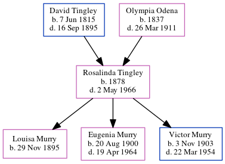

Rosalinda Tingley 1878 - 1966
[ Home ] | [ Calendar ] | [ Surnames Index ] | [ Census Index ] | [ Family History ]The child of David Tingley and Olympia Odena, Rosalinda Tingley, the first cousin three-times-removed on the father's side of Michele Copp (née Phillips), was born in Maine in 18781. She had 3 children, Louisa A, Eugenia A and Victor. In 1880, she was living in Littleton, Aroostook, Maine, USA1.
She died on May 2, 1966 in Dover Foxcroft, Piscataquis, Maine.
Parents
- David was born on Jun 7, 1815
- Olympia Eugenie was born in 1837
Children
- Louisa A was born on Nov 29, 1895
- Eugenia A was born on Aug 20, 1900
- Victor was born on Nov 3, 1903
Citations
- 1880 United States Federal Census Online publication - Provo, UT, USA: The Generations Network, Inc., 2005. 1880 U.S. Census Index provided by The Church of Jesus Christ of Latter-day Saints © Copyright 1999 Intellectual Reserve, Inc. All rights reserved. All use is subject to the limite
Family Tree
Generated by ged2site. Last updated on Jun 6, 2024